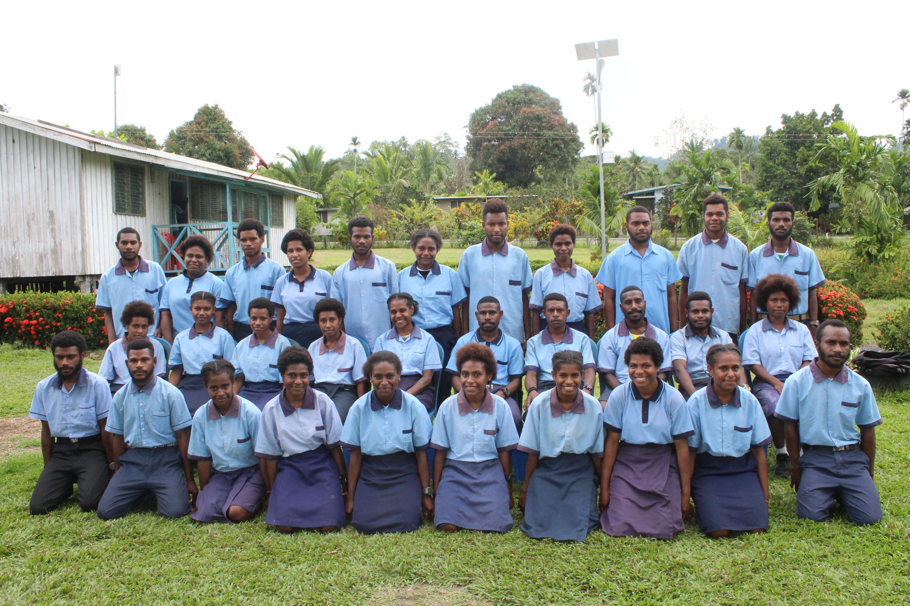
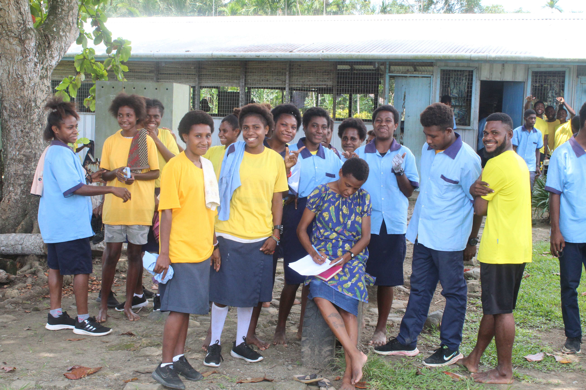
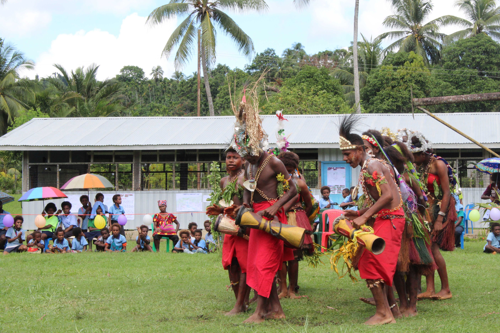

Quality Education
Students are supported to develop academic knowledge, practical skills and positive learning attitudes.

"Motto: Strive For Success"
Mandi Junior High School is an educational institution committed to providing quality learning opportunities for young people in Papua New Guinea.
Our school promotes academic development, good character, cultural respect, discipline and active participation within the community.
Learn More About Our SchoolExplore our school through the gallery below, showcasing our students, staff and activities.




Mandi Junior High School provides a supportive learning environment where students can develop knowledge, skills, confidence and responsible attitudes.
The school serves students, parents, guardians, teachers and members of the wider community by providing information about school activities, learning programs, enrolment and communication.

Students are supported to develop academic knowledge, practical skills and positive learning attitudes.
The school encourages discipline, leadership, teamwork, responsibility and respect.
Parents, guardians and the wider community are encouraged to participate in supporting education.